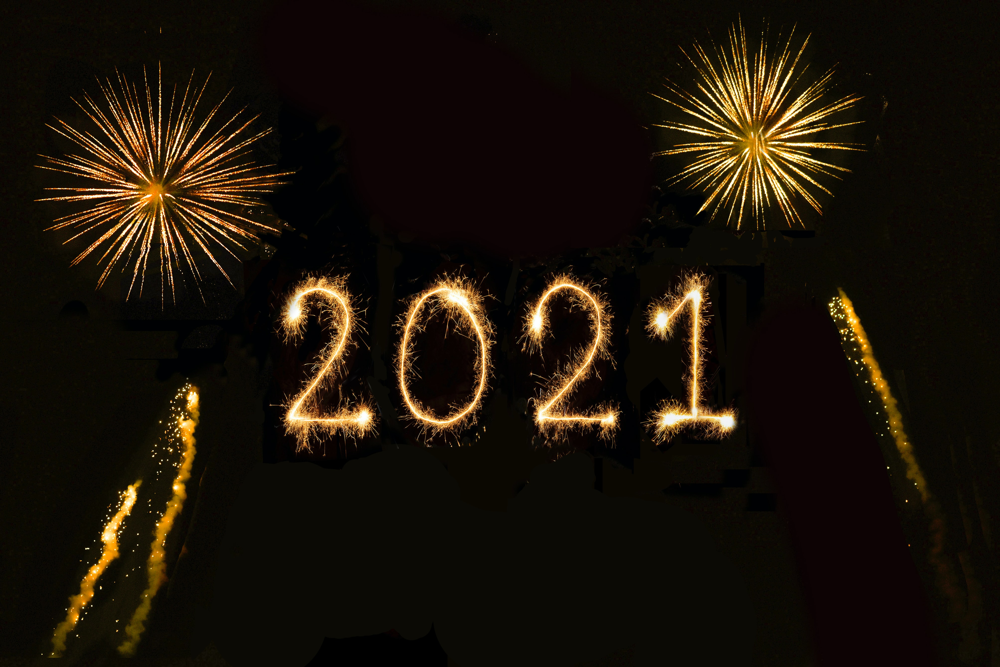

도일의 사이트
본인의 목표 작성
소통,공유의 장
사이트 소개
우리의 목표
를 부문별로 각각 2개씩해서 총 10-15개를 적습니다.
1._____
2._____
3._____
이후에
구체적인 계획과 데드라인
을 설정합니다.
소통의 장에 서로의 목표를 올려서 공유하고,응원하고,도와주면서 서로 힘을 줍니다.
"혼자가면 빨리가고, 함께 가면 멀리간다"
사진은
여기서
다운받았습니다.
